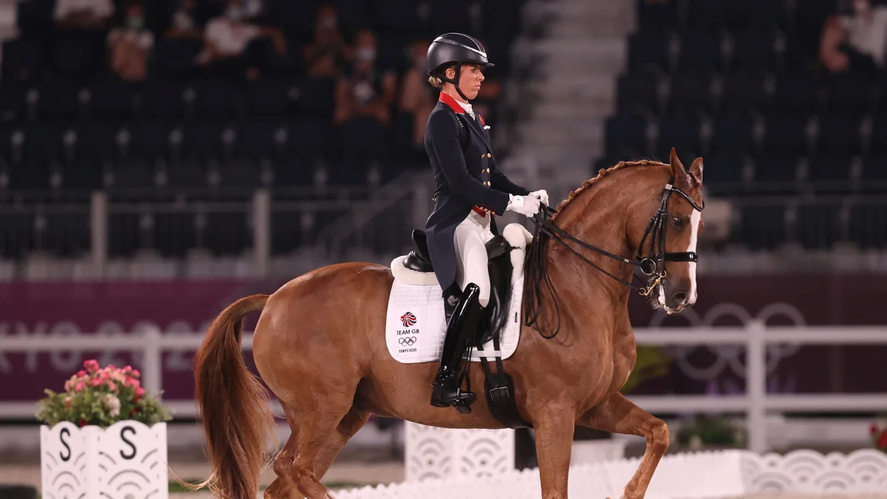

Equestrian dressage star Charlotte Dujardin announces sudden withdrawal from Paris Olympics
Three-time Olympic gold medal winner Charlotte Dujardin has shockingly announced she has pulled
out of Paris 2024
just days before the opening ceremony.
In a social media post, the famed British dressage star said she had withdrawn
from all competition
due to “making an error of judgement during a coaching session.”
Dujardin admitted a video she said was from four years ago showed her acting
“completely out of
character and does not reflect how I train my horses or coach my pupils.”
She has won a total of six Olympic medals - two silvers, a bronze, and three golds.
Another medal in Paris, in either individual or team dressage, would have broken the
tie with retired track cyclist Laura Kenny.
The decorated rider was to ride Imhotep at her fourth Olympic Games for Team GB.
Later on Tuesday, the International Federation for Equestrian Sports (FEI) announced it
had provisionally suspended Dujardin, saying it was “deeply disappointed.”
In a statement, the FEI said: “On 22 July 2024, the FEI received a video depicting
Ms. Dujardin engaging in conduct contrary to the principles of horse welfare.
“This video was submitted to the FEI by a lawyer representing an undisclosed complainant.
According to the information received, the footage was allegedly taken several years ago during
a training session conducted by Ms. Dujardin at a private stable.”
The governing body said Dujardin admitted her conduct was inappropriate as an
investigation into her actions continues.